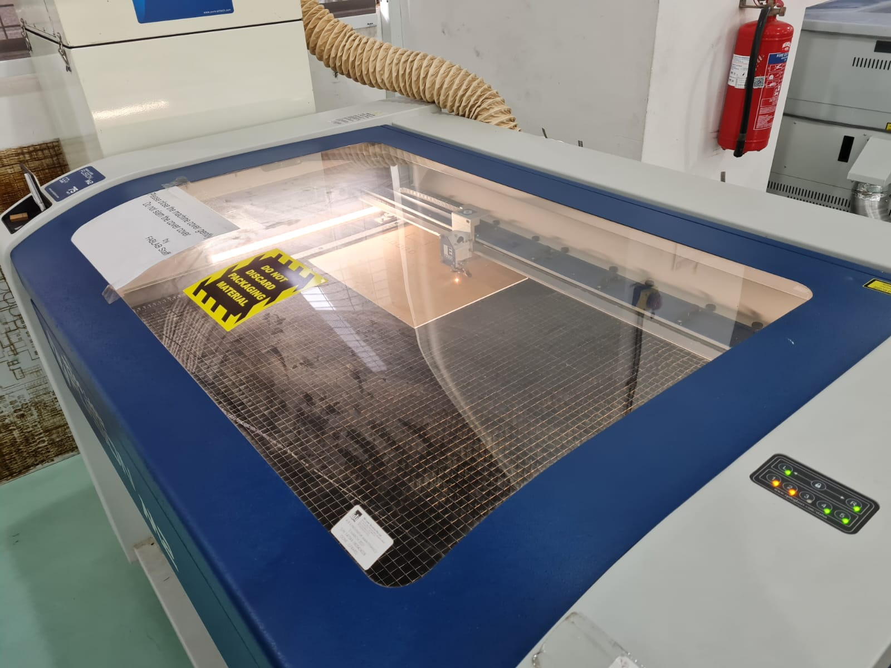
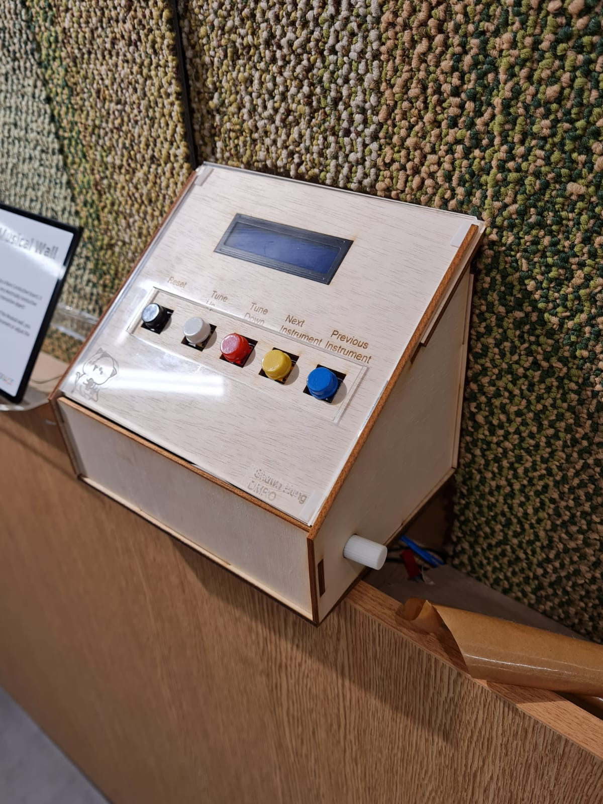

In EP1000 module, We learn how to convert our 2d model drawing and send it to the laser cutter.To cut the parts we want and assemble them together.
In order for 2d model drawing send to the laser cutter to cut.We are require to do some changes in this software called CoralDraw.
CoralDraw is software allow you change the hairline of your 2d model drawing to tell the laser cutter whether you want a cut, engrave or score.
CoralDraw accepts files such as dxf, dwg , pdf and many more.
I actually have some experience and knowleadge on how to use the laser cutter. With that, I show you a example of what I laser cut for my internship CDIO project.
This is my casing which I design to hold my eletronic components in it for my project which it's called the interactive musical wall.
This casing allows user to interactive and allowing them to change the tune, volume and instruments which they desire.
I laser cut out on a 3mm plywood and assemble them together.
This is how final assembling look like.